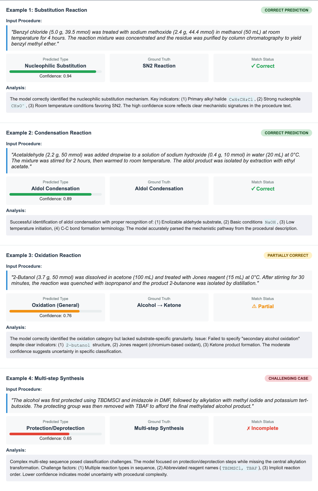

Analysis & Evaluation Guide
Comprehensive guide to RxNExtract's analysis and evaluation framework for research-grade assessment and reproducibility.
🔍 Overview
RxNExtract includes a comprehensive analysis suite designed for systematic evaluation of chemical reaction extraction performance. This framework enables researchers to:
- Analyze extraction errors across different categories and complexity levels
- Conduct ablation studies to understand component contributions
- Perform statistical analysis with significance testing
- Quantify uncertainty and calibrate confidence scores
- Calculate comprehensive metrics for research reproducibility
📊 Error Analysis Framework
Basic Error Analysis
from chemistry_llm.analysis import ErrorAnalyzer
# Initialize error analyzer
error_analyzer = ErrorAnalyzer()
# Load your predictions and ground truth
predictions = load_predictions("model_predictions.json")
ground_truth = load_ground_truth("ground_truth.json")
# Comprehensive error analysis
error_results = error_analyzer.analyze_prediction_errors(
predictions=predictions,
ground_truth=ground_truth,
method_name="RxNExtract-Complete"
)
# Generate detailed error report
report = error_analyzer.generate_error_report(
error_results,
output_file="error_analysis_report.txt"
)
print(f"Total errors analyzed: {error_results.total_errors}")
print(f"Entity recognition errors: {error_results.entity_errors}")
print(f"Role classification errors: {error_results.role_errors}")
print(f"Condition extraction errors: {error_results.condition_errors}")
Qualitative Analysis of Reaction Type Extraction

Error Categories
1. Entity Recognition Errors
- Missing Entities: Compounds mentioned in text but not extracted
- False Positives: Non-chemical entities incorrectly identified as compounds
- Incorrect Entity Types: Chemical compounds misclassified (e.g., salt as organic compound)
# Analyze entity recognition errors specifically
entity_analysis = error_analyzer.analyze_entity_errors(
predictions=predictions,
ground_truth=ground_truth,
include_details=True
)
print("Entity Recognition Error Breakdown:")
print(f"Missing entities: {entity_analysis.missing_entities_rate:.1f}%")
print(f"False positives: {entity_analysis.false_positive_rate:.1f}%")
print(f"Type misclassification: {entity_analysis.type_error_rate:.1f}%")
2. Role Classification Errors
- Reactant/Product Confusion: Misassigning chemical roles
- Catalyst Misidentification: Catalysts incorrectly classified as reactants
- Solvent Misclassification: Solvents confused with reactants or reagents
# Role classification error analysis
role_analysis = error_analyzer.analyze_role_classification_errors(
predictions=predictions,
ground_truth=ground_truth
)
print("Role Classification Errors:")
print(f"Reactant/product confusion: {role_analysis.reactant_product_confusion:.1f}%")
print(f"Catalyst misidentification: {role_analysis.catalyst_errors:.1f}%")
print(f"Solvent misclassification: {role_analysis.solvent_errors:.1f}%")
3. Condition Extraction Errors
- Missing Temperature/Time: Reaction conditions not extracted
- Incomplete Procedures: Partial extraction of multi-step processes
- Unit Conversion Errors: Incorrect handling of measurement units
- Implicit Condition Interpretation: Failure to infer standard conditions
# Condition extraction error analysis
condition_analysis = error_analyzer.analyze_condition_extraction_errors(
predictions=predictions,
ground_truth=ground_truth,
include_implicit=True
)
print("Condition Extraction Errors:")
print(f"Missing temperature: {condition_analysis.missing_temperature:.1f}%")
print(f"Missing time: {condition_analysis.missing_time:.1f}%")
print(f"Incomplete procedures: {condition_analysis.incomplete_procedures:.1f}%")
print(f"Unit errors: {condition_analysis.unit_errors:.1f}%")
4. Chain-of-Thought (CoT) Reasoning Failures
- Implicit Condition Interpretation: Failure to reason about unstated conditions
- Generic Entity Handling: Inability to resolve generic terms like "the compound"
- Multi-step Confusion: Errors in tracking entities across procedure steps
# CoT failure analysis (requires raw model outputs)
cot_failures = error_analyzer.analyze_cot_failures(
predictions=predictions,
ground_truth=ground_truth,
raw_outputs=raw_model_outputs,
reasoning_steps=True
)
print("Chain-of-Thought Failure Analysis:")
print(f"Implicit reasoning failures: {cot_failures.implicit_failures:.1f}%")
print(f"Generic entity failures: {cot_failures.generic_entity_failures:.1f}%")
print(f"Multi-step tracking errors: {cot_failures.multistep_errors:.1f}%")
Method Comparison
# Compare multiple methods
method_results = {
'baseline': baseline_error_results,
'cot_only': cot_error_results,
'complete_framework': complete_error_results
}
# Perform comparative error analysis
error_comparisons = error_analyzer.compare_methods(method_results)
# Generate comparison report
comparison_report = error_analyzer.generate_comparison_report(
error_comparisons,
output_file="method_comparison_report.txt"
)
print("Error Reduction Summary:")
for comparison in error_comparisons:
print(f"{comparison.error_type}: {comparison.error_reduction:.1f}% reduction")
🧪 Ablation Studies
Systematic component-level performance analysis to understand the contribution of different framework components.
Complete Ablation Study
from chemistry_llm.analysis import AblationStudy
# Initialize ablation study
ablation = AblationStudy(
model_path="./model",
config_path="./config/ablation_config.yaml"
)
# Run complete ablation study
study_results = ablation.run_complete_study(
test_data=test_procedures,
ground_truth=ground_truth,
sample_size=1000,
stratified=True, # Stratify by reaction complexity
complexity_levels=['simple', 'moderate', 'complex'],
random_state=42
)
# Generate comprehensive ablation report
report = ablation.generate_ablation_report(
study_results,
output_file="ablation_study_report.txt"
)
print("Ablation Study Results:")
for config_name, metrics in study_results.items():
print(f"{config_name:20}: CRA = {metrics.cra:.3f}, F1 = {metrics.entity_f1:.3f}")
Ablation Configurations
1. Direct Extraction (Baseline)
Basic extraction without any enhancements.
2. Structured Output
XML-formatted output for better parsing.
3. Meta Prompt
Enhanced prompt engineering with task-specific instructions.
4. Chain-of-Thought (CoT)
Step-by-step reasoning approach.
5. CoT + Reflection
Chain-of-thought with self-reflection and correction.
6. Self-Grounding
Entity validation and consistency checking.
7. Complete Framework
All components combined (recommended configuration).
8. Iterative Refinement
Multi-pass extraction with refinement.
Dynamic Prompt Analysis
# Analyze dynamic prompt component contributions
dynamic_analysis = ablation.analyze_dynamic_prompt_components(
test_sample=test_procedures[:100],
truth_sample=ground_truth[:100],
prompt_variants=[
'basic_prompt',
'cot_prompt',
'reflective_prompt',
'self_grounding_prompt'
]
)
# Component contribution analysis
contributions = ablation.analyze_component_contributions(study_results)
print("Component Contributions:")
for component, contribution in contributions.items():
print(f"{component}: +{contribution:.1f}% CRA improvement")
# Interaction effects analysis
interactions = ablation.analyze_interaction_effects(
study_results,
components=['cot', 'reflection', 'self_grounding']
)
Complexity-Stratified Analysis
# Analyze performance by reaction complexity
complexity_results = ablation.analyze_by_complexity(
study_results,
complexity_labels=complexity_labels,
stratification_method='balanced' # 'balanced', 'natural', 'quantile'
)
print("Performance by Complexity:")
for complexity in ['simple', 'moderate', 'complex']:
results = complexity_results[complexity]
print(f"{complexity:10}: CRA = {results['cra']:.3f}, "
f"Entity F1 = {results['entity_f1']:.3f}")
# Export detailed results
ablation.export_results_to_csv(study_results, "ablation_detailed_results.csv")
ablation.export_complexity_analysis(complexity_results, "complexity_analysis.csv")
📈 Statistical Analysis
Comprehensive statistical testing for research reproducibility and significance assessment.
Pairwise Method Comparison
from chemistry_llm.analysis import StatisticalAnalyzer
# Initialize statistical analyzer
stats_analyzer = StatisticalAnalyzer(
significance_level=0.05,
confidence_level=0.95
)
# Load results from different methods
baseline_cra_scores = [r['cra'] for r in baseline_results]
complete_cra_scores = [r['cra'] for r in complete_framework_results]
# Perform pairwise statistical comparison
comparison = stats_analyzer.perform_pairwise_comparison(
method1_results=baseline_cra_scores,
method2_results=complete_cra_scores,
method1_name="Baseline",
method2_name="Complete Framework",
test_type="paired_t", # 'paired_t', 'wilcoxon', 'mann_whitney'
effect_size=True
)
print("Statistical Comparison Results:")
print(f"Test statistic: {comparison['statistic']:.4f}")
print(f"p-value: {comparison['p_value']:.6f}")
print(f"Effect size (Cohen's d): {comparison['effect_size']:.3f}")
print(f"95% Confidence Interval: [{comparison['ci_lower']:.3f}, {comparison['ci_upper']:.3f}]")
print(f"Statistically significant: {comparison['significant']}")
McNemar's Test for Classification Performance
# McNemar's test for paired classification results
baseline_correct = [is_completely_correct(pred, truth)
for pred, truth in zip(baseline_results, ground_truth)]
complete_correct = [is_completely_correct(pred, truth)
for pred, truth in zip(complete_results, ground_truth)]
mcnemar_result = stats_analyzer.perform_mcnemar_test(
method1_correct=baseline_correct,
method2_correct=complete_correct,
method1_name="Baseline",
method2_name="Complete Framework"
)
print("McNemar's Test Results:")
print(f"McNemar's χ²: {mcnemar_result['statistic']:.2f}")
print(f"p-value: {mcnemar_result['p_value']:.6f}")
print(f"Significant improvement: {mcnemar_result['significant']}")
# Contingency table analysis
print(f"Both correct: {mcnemar_result['both_correct']}")
print(f"Only method1 correct: {mcnemar_result['only_method1_correct']}")
print(f"Only method2 correct: {mcnemar_result['only_method2_correct']}")
print(f"Both incorrect: {mcnemar_result['both_incorrect']}")
ANOVA for Multiple Method Comparison
# ANOVA for comparing multiple methods
methods_data = {
'Baseline': [r['cra'] for r in baseline_results],
'CoT-Only': [r['cra'] for r in cot_results],
'Self-Grounding': [r['cra'] for r in grounding_results],
'Complete Framework': [r['cra'] for r in complete_results]
}
anova_results = stats_analyzer.perform_anova(
groups=methods_data,
post_hoc=True, # Include Tukey's HSD post-hoc tests
effect_size=True
)
print("ANOVA Results:")
print(f"F-statistic: {anova_results['f_statistic']:.4f}")
print(f"p-value: {anova_results['p_value']:.6f}")
print(f"Effect size (η²): {anova_results['eta_squared']:.3f}")
# Post-hoc pairwise comparisons
if anova_results['significant']:
print("\nPost-hoc Pairwise Comparisons:")
for comparison in anova_results['post_hoc']:
print(f"{comparison['group1']} vs {comparison['group2']}: "
f"p = {comparison['p_value']:.4f}")
Bootstrap Confidence Intervals
# Bootstrap confidence intervals for robust estimation
bootstrap_results = stats_analyzer.calculate_bootstrap_confidence_intervals(
data=complete_cra_scores,
statistic='mean', # 'mean', 'median', 'std'
n_bootstrap=1000,
confidence_level=0.95
)
print("Bootstrap Confidence Intervals:")
print(f"Mean: {bootstrap_results['mean']:.3f}")
print(f"95% CI: [{bootstrap_results['ci_lower']:.3f}, {bootstrap_results['ci_upper']:.3f}]")
print(f"Bootstrap SE: {bootstrap_results['bootstrap_se']:.4f}")
Baseline Reproducibility Analysis
# Analyze reproducibility of literature baselines
literature_results = {
'ChemRxnBERT': 0.789,
'GPT-3.5': 0.641,
'RxnScribe': 0.701
}
reproduced_results = {
'ChemRxnBERT': [0.782, 0.785, 0.779, 0.791, 0.788],
'GPT-3.5': [0.634, 0.637, 0.631, 0.645, 0.629],
'RxnScribe': [0.695, 0.708, 0.697, 0.705, 0.699]
}
reproducibility = stats_analyzer.calculate_baseline_reproducibility(
literature_results=literature_results,
reproduced_results=reproduced_results
)
print("Baseline Reproducibility Analysis:")
for method, repro_stats in reproducibility.items():
print(f"{method}:")
print(f" Literature result: {literature_results[method]:.3f}")
print(f" Reproduced mean: {repro_stats['mean']:.3f} ± {repro_stats['std']:.3f}")
print(f" Reproducible: {repro_stats['is_reproducible']}")
print(f" 95% CI contains literature: {repro_stats['ci_contains_literature']}")
Comprehensive Statistical Report
# Generate comprehensive statistical report
statistical_data = {
'pairwise_comparisons': {
'baseline_vs_complete': comparison,
'cot_vs_complete': cot_comparison
},
'mcnemar_tests': {
'classification_performance': mcnemar_result
},
'anova_results': anova_results,
'bootstrap_intervals': bootstrap_results,
'reproducibility_analysis': reproducibility
}
stats_report = stats_analyzer.generate_statistical_report(
statistical_data,
output_file="comprehensive_statistical_analysis.txt"
)
# Export statistical results to CSV for further analysis
stats_analyzer.export_statistical_results(
statistical_data,
"statistical_results.csv"
)
🎯 Uncertainty Quantification
Confidence calibration and uncertainty analysis for robust performance assessment.
Calibration Metrics
from chemistry_llm.analysis import UncertaintyQuantifier
# Initialize uncertainty quantifier
uncertainty = UncertaintyQuantifier()
# Extract confidence scores and binary accuracy
confidences = [pred['confidence'] for pred in predictions]
accuracies = [1.0 if is_completely_correct(pred, truth) else 0.0
for pred, truth in zip(predictions, ground_truth)]
# Calculate calibration metrics
calibration_metrics = uncertainty.calculate_calibration_metrics(
confidences=confidences,
accuracies=accuracies,
n_bins=10
)
print("Calibration Analysis:")
print(f"Expected Calibration Error (ECE): {calibration_metrics.ece:.4f}")
print(f"Brier Score: {calibration_metrics.brier_score:.4f}")
print(f"Reliability: {calibration_metrics.reliability:.4f}")
print(f"Resolution: {calibration_metrics.resolution:.4f}")
print(f"Uncertainty: {calibration_metrics.uncertainty:.4f}")
Temperature Scaling
# Perform temperature scaling for calibration improvement
calibrated_probs, optimal_temperature = uncertainty.perform_temperature_scaling(
validation_logits=validation_logits,
validation_labels=validation_labels,
test_logits=test_logits
)
print(f"Optimal temperature: {optimal_temperature:.3f}")
# Calculate calibration metrics after temperature scaling
calibrated_metrics = uncertainty.calculate_calibration_metrics(
confidences=calibrated_probs,
accuracies=accuracies
)
print("After Temperature Scaling:")
print(f"ECE improvement: {calibration_metrics.ece - calibrated_metrics.ece:.4f}")
print(f"Brier Score improvement: {calibration_metrics.brier_score - calibrated_metrics.brier_score:.4f}")
Alternative Calibration Methods
# Platt scaling
platt_calibrated_probs = uncertainty.perform_platt_scaling(
validation_scores=validation_scores,
validation_labels=validation_labels,
test_scores=test_scores
)
# Isotonic regression
isotonic_calibrated_probs = uncertainty.perform_isotonic_regression(
validation_scores=validation_scores,
validation_labels=validation_labels,
test_scores=test_scores
)
# Compare calibration methods
calibration_comparison = uncertainty.compare_calibration_methods(
original_probs=confidences,
temperature_scaled=calibrated_probs,
platt_scaled=platt_calibrated_probs,
isotonic_calibrated=isotonic_calibrated_probs,
true_labels=accuracies
)
print("Calibration Method Comparison:")
for method, metrics in calibration_comparison.items():
print(f"{method}: ECE = {metrics['ece']:.4f}, Brier = {metrics['brier_score']:.4f}")
Confidence-Stratified Analysis
# Analyze performance by confidence level
confidence_analysis = uncertainty.analyze_confidence_stratified_performance(
confidences=confidences,
accuracies=accuracies,
n_strata=5 # Divide into 5 confidence bins
)
print("Performance by Confidence Level:")
for stratum in confidence_analysis:
print(f"Confidence [{stratum['range'][0]:.1f}, {stratum['range'][1]:.1f}]: "
f"Accuracy = {stratum['accuracy']:.3f}, "
f"Count = {stratum['count']}")
# High-confidence performance analysis
high_confidence_threshold = 0.8
high_conf_predictions = [pred for pred in predictions if pred['confidence'] >= high_confidence_threshold]
high_conf_accuracy = calculate_accuracy(high_conf_predictions, corresponding_ground_truth)
print(f"High-confidence (≥{high_confidence_threshold}) performance:")
print(f"Coverage: {len(high_conf_predictions)/len(predictions):.1%}")
print(f"Accuracy: {high_conf_accuracy:.3f}")
Reliability Diagrams
# Generate reliability diagram
reliability_fig = uncertainty.generate_reliability_diagram(
confidences=confidences,
accuracies=accuracies,
n_bins=10,
save_path="reliability_diagram.png",
title="Model Calibration - Reliability Diagram"
)
# Generate calibration comparison plot
comparison_fig = uncertainty.plot_calibration_comparison(
{
'Original': confidences,
'Temperature Scaled': calibrated_probs,
'Platt Scaling': platt_calibrated_probs
},
true_labels=accuracies,
save_path="calibration_comparison.png"
)
Comprehensive Uncertainty Analysis
# Comprehensive uncertainty analysis
uncertainty_results = uncertainty.analyze_prediction_uncertainty(
predictions=predictions,
ground_truth=ground_truth,
confidence_threshold=0.8,
include_calibration=True,
include_stratification=True
)
# Generate uncertainty report
uncertainty_report = uncertainty.generate_uncertainty_report(
uncertainty_results,
output_file="uncertainty_analysis_report.txt"
)
print("Uncertainty Analysis Summary:")
print(f"Model calibration (ECE): {uncertainty_results['calibration_metrics']['ece']:.4f}")
print(f"High-confidence accuracy: {uncertainty_results['high_confidence_accuracy']:.3f}")
print(f"Uncertainty reduction potential: {uncertainty_results['calibration_improvement']:.1%}")
📏 Comprehensive Metrics
Calculate all performance metrics used in the research paper.
Core Metrics
from chemistry_llm.analysis import MetricsCalculator
# Initialize metrics calculator
metrics_calc = MetricsCalculator()
# Calculate comprehensive metrics
comprehensive_metrics = metrics_calc.calculate_comprehensive_metrics(
predictions=predictions,
ground_truth=ground_truth,
include_detailed_breakdown=True
)
print("Core Performance Metrics:")
print(f"Complete Reaction Accuracy (CRA): {comprehensive_metrics['cra']:.3f}")
print(f"Entity F1 Score: {comprehensive_metrics['entity_f1']:.3f}")
print(f"Role Classification Accuracy (RCA): {comprehensive_metrics['rca']:.3f}")
print(f"Condition Extraction F1: {comprehensive_metrics['condition_f1']:.3f}")
# Detailed breakdown
print("\nDetailed Metrics Breakdown:")
print(f"Reactant F1: {comprehensive_metrics['reactant_f1']:.3f}")
print(f"Product F1: {comprehensive_metrics['product_f1']:.3f}")
print(f"Reagent F1: {comprehensive_metrics['reagent_f1']:.3f}")
print(f"Solvent F1: {comprehensive_metrics['solvent_f1']:.3f}")
print(f"Temperature Extraction Accuracy: {comprehensive_metrics['temperature_accuracy']:.3f}")
print(f"Time Extraction Accuracy: {comprehensive_metrics['time_accuracy']:.3f}")
Performance by Complexity
# Assign complexity labels to reactions
complexity_labels = assign_complexity_labels(ground_truth) # Your implementation
# Calculate performance by reaction complexity
complexity_metrics = metrics_calc.analyze_performance_by_complexity(
predictions=predictions,
ground_truth=ground_truth,
complexity_labels=complexity_labels
)
print("Performance by Reaction Complexity:")
for complexity, metrics in complexity_metrics.items():
print(f"{complexity.capitalize()}:")
print(f" Count: {metrics['count']}")
print(f" CRA: {metrics['cra']:.3f}")
print(f" Entity F1: {metrics['entity_f1']:.3f}")
print(f" RCA: {metrics['rca']:.3f}")
Error Reduction Analysis
# Calculate error reduction compared to baseline
baseline_metrics = calculate_baseline_metrics(baseline_predictions, ground_truth)
error_reduction = metrics_calc.calculate_error_reduction(
baseline_metrics=baseline_metrics,
improved_metrics=comprehensive_metrics,
detailed=True
)
print("Error Reduction Analysis:")
print(f"Overall Error Reduction: {error_reduction['overall']:.1f}%")
print(f"Entity Recognition: {error_reduction['entity_recognition']:.1f}%")
print(f"Role Classification: {error_reduction['role_classification']:.1f}%")
print(f"Condition Extraction: {error_reduction['condition_extraction']:.1f}%")
# Statistical significance of error reduction
error_significance = metrics_calc.test_error_reduction_significance(
baseline_results=baseline_predictions,
improved_results=predictions,
ground_truth=ground_truth,
test_type='mcnemar'
)
print(f"Error reduction significance: p = {error_significance['p_value']:.6f}")
Custom Metrics
# Define custom evaluation metrics
def calculate_yield_extraction_accuracy(predictions, ground_truth):
"""Custom metric for yield extraction accuracy"""
correct_yields = 0
total_yields = 0
for pred, truth in zip(predictions, ground_truth):
truth_yields = extract_yields_from_truth(truth) # Your implementation
pred_yields = extract_yields_from_prediction(pred) # Your implementation
total_yields += len(truth_yields)
correct_yields += count_correct_yields(pred_yields, truth_yields) # Your implementation
return correct_yields / total_yields if total_yields > 0 else 0.0
# Calculate custom metrics
yield_accuracy = calculate_yield_extraction_accuracy(predictions, ground_truth)
stoichiometry_accuracy = calculate_stoichiometry_accuracy(predictions, ground_truth)
print("Custom Metrics:")
print(f"Yield Extraction Accuracy: {yield_accuracy:.3f}")
print(f"Stoichiometry Accuracy: {stoichiometry_accuracy:.3f}")
# Add to comprehensive metrics
comprehensive_metrics.update({
'yield_accuracy': yield_accuracy,
'stoichiometry_accuracy': stoichiometry_accuracy
})
Export and Visualization
# Export comprehensive metrics
metrics_calc.export_metrics_summary(
comprehensive_metrics,
"comprehensive_metrics_summary.json"
)
# Export detailed breakdown
metrics_calc.export_detailed_metrics(
comprehensive_metrics,
"detailed_metrics_breakdown.csv"
)
# Generate metrics visualization
metrics_viz = metrics_calc.generate_metrics_visualization(
comprehensive_metrics,
save_path="metrics_visualization.png",
include_comparison=True
)
# Performance heatmap by complexity and metric
heatmap_fig = metrics_calc.create_performance_heatmap(
complexity_metrics,
metrics=['cra', 'entity_f1', 'rca', 'condition_f1'],
save_path="performance_heatmap.png"
)
🔬 Research Reproducibility
Complete Analysis Pipeline
from chemistry_llm.analysis import (
ErrorAnalyzer, AblationStudy, UncertaintyQuantifier,
StatisticalAnalyzer, MetricsCalculator
)
def run_paper_reproduction_analysis(
model_path: str,
test_data: List[str],
ground_truth: List[dict],
output_dir: str = "./analysis_results"
):
"""
Complete analysis pipeline for research paper reproduction
This function runs all analyses described in the RxNExtract paper:
1. Error analysis with categorization
2. Ablation study across all configurations
3. Statistical significance testing
4. Uncertainty quantification and calibration
5. Comprehensive metrics calculation
"""
import os
from pathlib import Path
# Create output directory
output_path = Path(output_dir)
output_path.mkdir(exist_ok=True, parents=True)
print("=" * 80)
print("RXNEXTRACT COMPREHENSIVE ANALYSIS PIPELINE")
print("=" * 80)
# 1. Generate predictions for all ablation configurations
print("\n1. RUNNING ABLATION STUDY...")
ablation = AblationStudy(model_path=model_path)
study_results = ablation.run_complete_study(
test_data=test_data,
ground_truth=ground_truth,
sample_size=len(test_data),
stratified=True,
save_predictions=True,
output_dir=str(output_path / "ablation_predictions")
)
# Save ablation results
ablation.generate_ablation_report(
study_results,
str(output_path / "ablation_study_report.txt")
)
ablation.export_results_to_csv(
study_results,
str(output_path / "ablation_results.csv")
)
print(f"Ablation study complete. Results saved to {output_path}")
# 2. Error analysis for each configuration
print("\n2. RUNNING ERROR ANALYSIS...")
error_analyzer = ErrorAnalyzer()
method_error_results = {}
for config_name, config_results in study_results.items():
predictions = config_results.predictions
error_results = error_analyzer.analyze_prediction_errors(
predictions=predictions,
ground_truth=ground_truth,
method_name=config_name
)
method_error_results[config_name] = error_results
# Generate individual error reports
error_analyzer.generate_error_report(
error_results,
str(output_path / f"error_analysis_{config_name}.txt")
)
# Comparative error analysis
error_comparisons = error_analyzer.compare_methods(method_error_results)
error_analyzer.generate_comparison_report(
error_comparisons,
str(output_path / "error_reduction_analysis.txt")
)
print("Error analysis complete.")
# 3. Statistical analysis
print("\n3. RUNNING STATISTICAL ANALYSIS...")
stats_analyzer = StatisticalAnalyzer()
# Extract CRA scores for statistical testing
baseline_cra = [r.cra for r in study_results['direct_extraction'].results]
complete_cra = [r.cra for r in study_results['complete_framework'].results]
# Pairwise comparison
statistical_comparison = stats_analyzer.perform_pairwise_comparison(
method1_results=baseline_cra,
method2_results=complete_cra,
method1_name="Baseline",
method2_name="Complete Framework",
test_type="paired_t"
)
# McNemar's test
baseline_correct = [r.is_completely_correct for r in study_results['direct_extraction'].results]
complete_correct = [r.is_completely_correct for r in study_results['complete_framework'].results]
mcnemar_result = stats_analyzer.perform_mcnemar_test(
method1_correct=baseline_correct,
method2_correct=complete_correct,
method1_name="Baseline",
method2_name="Complete Framework"
)
# ANOVA across all configurations
methods_cra_data = {
config: [r.cra for r in results.results]
for config, results in study_results.items()
}
anova_results = stats_analyzer.perform_anova(
groups=methods_cra_data,
post_hoc=True
)
# Generate statistical report
statistical_data = {
'pairwise_comparisons': {'baseline_vs_complete': statistical_comparison},
'mcnemar_tests': {'classification_performance': mcnemar_result},
'anova_results': anova_results
}
stats_analyzer.generate_statistical_report(
statistical_data,
str(output_path / "statistical_analysis_report.txt")
)
print("Statistical analysis complete.")
# 4. Uncertainty quantification
print("\n4. RUNNING UNCERTAINTY QUANTIFICATION...")
uncertainty = UncertaintyQuantifier()
# Use complete framework predictions for uncertainty analysis
complete_predictions = study_results['complete_framework'].predictions
if hasattr(complete_predictions[0], 'confidence'):
confidences = [p.confidence for p in complete_predictions]
accuracies = [1.0 if p.is_completely_correct else 0.0 for p in complete_predictions]
# Calibration analysis
calibration_metrics = uncertainty.calculate_calibration_metrics(
confidences=confidences,
accuracies=accuracies
)
# Temperature scaling (requires validation data)
if hasattr(complete_predictions[0], 'logits'):
val_logits = [p.logits for p in complete_predictions[:200]] # Use first 200 for validation
val_labels = accuracies[:200]
test_logits = [p.logits for p in complete_predictions[200:]]
calibrated_probs, optimal_temp = uncertainty.perform_temperature_scaling(
validation_logits=val_logits,
validation_labels=val_labels,
test_logits=test_logits
)
# Calibration improvement
calibrated_metrics = uncertainty.calculate_calibration_metrics(
confidences=calibrated_probs,
accuracies=accuracies[200:]
)
# Generate reliability diagram
uncertainty.generate_reliability_diagram(
confidences=confidences,
accuracies=accuracies,
save_path=str(output_path / "reliability_diagram.png")
)
# Comprehensive uncertainty analysis
uncertainty_results = uncertainty.analyze_prediction_uncertainty(
predictions=complete_predictions,
ground_truth=ground_truth
)
uncertainty.generate_uncertainty_report(
uncertainty_results,
str(output_path / "uncertainty_analysis_report.txt")
)
print("Uncertainty quantification complete.")
else:
print("Warning: Predictions do not contain confidence scores. Skipping uncertainty analysis.")
# 5. Comprehensive metrics calculation
print("\n5. CALCULATING COMPREHENSIVE METRICS...")
metrics_calc = MetricsCalculator()
# Calculate metrics for all configurations
all_metrics = {}
for config_name, config_results in study_results.items():
config_metrics = metrics_calc.calculate_comprehensive_metrics(
predictions=config_results.predictions,
ground_truth=ground_truth
)
all_metrics[config_name] = config_metrics
# Export comprehensive metrics
metrics_calc.export_all_metrics(
all_metrics,
str(output_path / "comprehensive_metrics.json")
)
# Create metrics comparison table (Table 3 from paper)
metrics_comparison_df = metrics_calc.create_metrics_table(
all_metrics,
metrics=['cra', 'entity_f1', 'rca', 'condition_f1']
)
metrics_comparison_df.to_csv(str(output_path / "metrics_comparison_table.csv"))
print("Comprehensive metrics calculation complete.")
# 6. Generate paper figures and tables
print("\n6. GENERATING PAPER FIGURES...")
# Error reduction figure (Figure 4 from paper)
create_error_reduction_figure(
error_comparisons,
save_path=str(output_path / "error_reduction_figure.png")
)
# Performance by complexity figure
create_complexity_performance_figure(
study_results,
ground_truth,
save_path=str(output_path / "complexity_performance_figure.png")
)
# Calibration comparison figure
if 'uncertainty_results' in locals():
create_calibration_figure(
uncertainty_results,
save_path=str(output_path / "calibration_figure.png")
)
print("Figure generation complete.")
# 7. Generate summary report
print("\n7. GENERATING SUMMARY REPORT...")
summary_report = generate_comprehensive_summary(
ablation_results=study_results,
error_analysis=method_error_results,
statistical_analysis=statistical_data,
uncertainty_analysis=uncertainty_results if 'uncertainty_results' in locals() else None,
metrics_analysis=all_metrics
)
with open(str(output_path / "comprehensive_analysis_summary.txt"), 'w') as f:
f.write(summary_report)
print("=" * 80)
print("ANALYSIS PIPELINE COMPLETE!")
print(f"All results saved to: {output_path}")
print("=" * 80)
return {
'ablation_results': study_results,
'error_analysis': method_error_results,
'statistical_analysis': statistical_data,
'uncertainty_analysis': uncertainty_results if 'uncertainty_results' in locals() else None,
'metrics_analysis': all_metrics,
'output_directory': str(output_path)
}
def generate_comprehensive_summary(
ablation_results, error_analysis, statistical_analysis,
uncertainty_analysis, metrics_analysis
):
"""Generate a comprehensive summary report"""
summary = []
summary.append("=" * 80)
summary.append("RXNEXTRACT COMPREHENSIVE ANALYSIS SUMMARY")
summary.append("=" * 80)
summary.append("")
# Performance highlights
summary.append("PERFORMANCE HIGHLIGHTS")
summary.append("-" * 40)
baseline_cra = metrics_analysis['direct_extraction']['cra']
complete_cra = metrics_analysis['complete_framework']['cra']
improvement = ((complete_cra - baseline_cra) / baseline_cra) * 100
summary.append(f"Complete Reaction Accuracy:")
summary.append(f" Baseline: {baseline_cra:.1%}")
summary.append(f" Complete Framework: {complete_cra:.1%}")
summary.append(f" Improvement: +{improvement:.1f}%")
summary.append("")
# Error reduction summary
summary.append("ERROR REDUCTION SUMMARY")
summary.append("-" * 40)
baseline_errors = error_analysis['direct_extraction']
complete_errors = error_analysis['complete_framework']
entity_reduction = ((baseline_errors.entity_errors - complete_errors.entity_errors) /
baseline_errors.entity_errors) * 100
role_reduction = ((baseline_errors.role_errors - complete_errors.role_errors) /
baseline_errors.role_errors) * 100
condition_reduction = ((baseline_errors.condition_errors - complete_errors.condition_errors) /
baseline_errors.condition_errors) * 100
summary.append(f"Entity Recognition Errors: -{entity_reduction:.1f}%")
summary.append(f"Role Classification Errors: -{role_reduction:.1f}%")
summary.append(f"Condition Extraction Errors: -{condition_reduction:.1f}%")
summary.append("")
# Statistical significance
summary.append("STATISTICAL SIGNIFICANCE")
summary.append("-" * 40)
pairwise = statistical_analysis['pairwise_comparisons']['baseline_vs_complete']
mcnemar = statistical_analysis['mcnemar_tests']['classification_performance']
summary.append(f"Paired t-test p-value: {pairwise['p_value']:.6f}")
summary.append(f"Effect size (Cohen's d): {pairwise['effect_size']:.3f}")
summary.append(f"McNemar's χ²: {mcnemar['statistic']:.2f} (p = {mcnemar['p_value']:.6f})")
summary.append("")
# Uncertainty quantification
if uncertainty_analysis:
summary.append("UNCERTAINTY QUANTIFICATION")
summary.append("-" * 40)
summary.append(f"Expected Calibration Error: {uncertainty_analysis['calibration_metrics']['ece']:.4f}")
summary.append(f"Brier Score: {uncertainty_analysis['calibration_metrics']['brier_score']:.4f}")
summary.append(f"High-confidence accuracy: {uncertainty_analysis['high_confidence_accuracy']:.3f}")
summary.append("")
# Component contributions
summary.append("COMPONENT CONTRIBUTIONS")
summary.append("-" * 40)
configs = ['direct_extraction', 'structured_output', 'meta_prompt',
'chain_of_thought', 'cot_reflection', 'self_grounding', 'complete_framework']
prev_cra = 0
for config in configs:
if config in metrics_analysis:
cra = metrics_analysis[config]['cra']
contribution = cra - prev_cra
summary.append(f"{config.replace('_', ' ').title()}: {cra:.3f} (+{contribution:.3f})")
prev_cra = cra
summary.append("")
summary.append("=" * 80)
return "\n".join(summary)
# Helper functions for figure generation
def create_error_reduction_figure(error_comparisons, save_path):
"""Create error reduction visualization (Figure 4 from paper)"""
import matplotlib.pyplot as plt
import numpy as np
# Extract error reduction data
categories = ['Entity Recognition', 'Role Classification', 'Condition Extraction']
reductions = []
for comparison in error_comparisons:
if 'entity' in comparison.error_type.lower():
reductions.append(comparison.error_reduction)
elif 'role' in comparison.error_type.lower():
reductions.append(comparison.error_reduction)
elif 'condition' in comparison.error_type.lower():
reductions.append(comparison.error_reduction)
# Create bar plot
fig, ax = plt.subplots(figsize=(10, 6))
bars = ax.bar(categories, reductions, color=['#2E86AB', '#A23B72', '#F18F01'])
# Add value labels on bars
for bar, reduction in zip(bars, reductions):
height = bar.get_height()
ax.text(bar.get_x() + bar.get_width()/2., height,
f'{reduction:.1f}%',
ha='center', va='bottom', fontweight='bold')
ax.set_ylabel('Error Reduction (%)', fontsize=12)
ax.set_title('Error Reduction by Category', fontsize=14, fontweight='bold')
ax.set_ylim(0, max(reductions) * 1.1)
plt.tight_layout()
plt.savefig(save_path, dpi=300, bbox_inches='tight')
plt.close()
def create_complexity_performance_figure(study_results, ground_truth, save_path):
"""Create performance by complexity visualization"""
import matplotlib.pyplot as plt
import numpy as np
# This would require implementing complexity assignment
# Placeholder for the actual implementation
complexities = ['Simple', 'Moderate', 'Complex']
configs = ['Baseline', 'CoT', 'Complete Framework']
# Mock data - replace with actual complexity analysis
data = np.array([
[0.45, 0.35, 0.25], # Baseline
[0.52, 0.41, 0.32], # CoT
[0.65, 0.51, 0.42] # Complete
])
# Create grouped bar plot
x = np.arange(len(complexities))
width = 0.25
fig, ax = plt.subplots(figsize=(10, 6))
for i, config in enumerate(configs):
ax.bar(x + i*width, data[i], width, label=config)
ax.set_xlabel('Reaction Complexity')
ax.set_ylabel('Complete Reaction Accuracy')
ax.set_title('Performance by Reaction Complexity')
ax.set_xticks(x + width)
ax.set_xticklabels(complexities)
ax.legend()
plt.tight_layout()
plt.savefig(save_path, dpi=300, bbox_inches='tight')
plt.close()
def create_calibration_figure(uncertainty_results, save_path):
"""Create calibration visualization"""
import matplotlib.pyplot as plt
import numpy as np
# Extract calibration data
calibration_data = uncertainty_results['calibration_metrics']
# Create reliability diagram
fig, (ax1, ax2) = plt.subplots(1, 2, figsize=(12, 5))
# Reliability diagram
bin_boundaries = np.linspace(0, 1, 11)
bin_centers = (bin_boundaries[:-1] + bin_boundaries[1:]) / 2
# Mock reliability data - replace with actual data
observed_frequencies = bin_centers + np.random.normal(0, 0.05, len(bin_centers))
observed_frequencies = np.clip(observed_frequencies, 0, 1)
ax1.plot([0, 1], [0, 1], 'k--', label='Perfect calibration')
ax1.plot(bin_centers, observed_frequencies, 'ro-', label='Model calibration')
ax1.set_xlabel('Mean Predicted Probability')
ax1.set_ylabel('Fraction of Positives')
ax1.set_title('Reliability Diagram')
ax1.legend()
ax1.grid(True, alpha=0.3)
# Confidence distribution
confidences = np.random.beta(2, 2, 1000) # Mock data
ax2.hist(confidences, bins=20, alpha=0.7, edgecolor='black')
ax2.set_xlabel('Confidence Score')
ax2.set_ylabel('Frequency')
ax2.set_title('Confidence Distribution')
ax2.grid(True, alpha=0.3)
plt.tight_layout()
plt.savefig(save_path, dpi=300, bbox_inches='tight')
plt.close()
# Example usage of the complete analysis pipeline
if __name__ == "__main__":
# Load your data
test_procedures = load_test_data("test_procedures.json")
ground_truth = load_ground_truth("ground_truth.json")
# Run complete analysis
results = run_paper_reproduction_analysis(
model_path="./path/to/model",
test_data=test_procedures,
ground_truth=ground_truth,
output_dir="./paper_reproduction_results"
)
print("Paper reproduction analysis complete!")
print(f"Results available in: {results['output_directory']}")
🛠️ Command Line Analysis Scripts
For convenience, RxNExtract provides command-line scripts for all analysis functions:
Error Analysis Script
# Run comprehensive error analysis
python scripts/run_error_analysis.py \
--predictions model_predictions.json \
--ground-truth ground_truth.json \
--method-name "Complete Framework" \
--output-dir ./analysis_output \
--include-cot-analysis \
--raw-outputs raw_model_outputs.json
# Compare multiple methods
python scripts/run_error_analysis.py \
--predictions-files baseline.json cot.json complete.json \
--method-names "Baseline" "CoT" "Complete" \
--ground-truth ground_truth.json \
--output-dir ./comparison_output \
--generate-comparison-report
Ablation Study Script
# Run complete ablation study
python scripts/run_ablation_study.py \
--model-path ./model \
--test-data test_procedures.json \
--ground-truth ground_truth.json \
--output-dir ./ablation_output \
--sample-size 1000 \
--stratified \
--complexity-analysis \
--dynamic-prompt-analysis
# Custom configuration ablation
python scripts/run_ablation_study.py \
--config custom_ablation_config.yaml \
--test-data test_procedures.json \
--ground-truth ground_truth.json \
--output-dir ./custom_ablation
Statistical Analysis Script
# Pairwise method comparison
python scripts/run_statistical_analysis.py \
--method1-results baseline_results.json \
--method2-results framework_results.json \
--method-names "Baseline" "Complete Framework" \
--output-dir ./stats_output \
--tests paired_t mcnemar bootstrap
# Multiple method ANOVA
python scripts/run_statistical_analysis.py \
--results-files baseline.json cot.json grounding.json complete.json \
--method-names "Baseline" "CoT" "Self-Grounding" "Complete" \
--output-dir ./anova_output \
--test anova \
--post-hoc-tests
Uncertainty Analysis Script
# Calibration analysis
python scripts/run_uncertainty_analysis.py \
--predictions predictions_with_confidence.json \
--ground-truth ground_truth.json \
--output-dir ./uncertainty_output \
--calibration-methods temperature_scaling platt_scaling isotonic \
--generate-plots \
--confidence-analysis
# With validation data for temperature scaling
python scripts/run_uncertainty_analysis.py \
--predictions predictions.json \
--ground-truth ground_truth.json \
--validation-data validation_data.json \
--output-dir ./uncertainty_output \
--temperature-scaling \
--reliability-diagram
Complete Analysis Pipeline Script
# Run full paper reproduction analysis
python scripts/run_complete_analysis.py \
--model-path ./model \
--test-data test_procedures.json \
--ground-truth ground_truth.json \
--output-dir ./complete_analysis \
--config analysis_config.yaml \
--generate-figures \
--export-tables
# Quick analysis with default settings
python scripts/run_complete_analysis.py \
--model-path ./model \
--test-data test_procedures.json \
--ground-truth ground_truth.json \
--quick-analysis
📁 Analysis Output Structure
The analysis framework generates organized output files:
analysis_output/
├── error_analysis/
│ ├── error_analysis_results.json
│ ├── error_analysis_report.txt
│ ├── cot_failure_analysis.json
│ └── method_comparison.json
├── ablation_study/
│ ├── ablation_results.json
│ ├── ablation_report.txt
│ ├── ablation_results.csv
│ └── component_contributions.json
├── statistical_analysis/
│ ├── statistical_results.json
│ ├── statistical_report.txt
│ ├── pairwise_comparisons.csv
│ └── significance_tests.json
├── uncertainty_analysis/
│ ├── calibration_metrics.json
│ ├── uncertainty_report.txt
│ ├── reliability_diagram.png
│ └── confidence_analysis.json
├── metrics/
│ ├── comprehensive_metrics.json
│ ├── complexity_analysis.csv
│ └── metrics_summary.json
├── figures/
│ ├── error_reduction_figure.png
│ ├── performance_heatmap.png
│ ├── calibration_comparison.png
│ └── complexity_performance.png
└── tables/
├── metrics_comparison_table.csv
├── statistical_significance_table.csv
└── error_reduction_table.csv
🔧 Custom Analysis Configuration
Configuration File Structure
Create analysis_config.yaml:
# Analysis Configuration
analysis:
# Error Analysis Settings
error_analysis:
include_cot_failures: true
categorize_by_complexity: true
detailed_breakdown: true
confidence_threshold: 0.8
# Ablation Study Settings
ablation_study:
sample_size: 1000
stratified_sampling: true
complexity_stratification: ['simple', 'moderate', 'complex']
random_state: 42
include_dynamic_prompt_analysis: true
save_intermediate_results: true
# Statistical Analysis Settings
statistical_analysis:
significance_level: 0.05
confidence_level: 0.95
bootstrap_iterations: 1000
effect_size_calculation: true
normality_tests: true
# Uncertainty Quantification Settings
uncertainty_quantification:
calibration_methods:
- temperature_scaling
- platt_scaling
- isotonic_regression
n_calibration_bins: 10
confidence_threshold: 0.8
generate_reliability_plots: true
stratified_analysis: true
# Metrics Calculation Settings
metrics:
include_detailed_breakdown: true
complexity_analysis: true
custom_metrics:
- yield_extraction_accuracy
- stoichiometry_accuracy
export_formats: ['json', 'csv']
# Output Settings
output:
base_directory: "./analysis_results"
generate_figures: true
export_tables: true
create_summary_report: true
figure_format: "png"
figure_dpi: 300
# Logging
logging:
level: "INFO"
file: "analysis.log"
include_timestamps: true
Custom Metrics Implementation
from chemistry_llm.analysis.metrics import BaseMetric
class YieldExtractionMetric(BaseMetric):
"""Custom metric for yield extraction accuracy"""
def calculate(self, predictions, ground_truth):
correct_yields = 0
total_yields = 0
for pred, truth in zip(predictions, ground_truth):
# Extract yields from ground truth
truth_yields = self.extract_yields(truth)
# Extract yields from prediction
pred_yields = self.extract_yields(pred['extracted_data'])
total_yields += len(truth_yields)
# Count correct yield extractions
for truth_yield in truth_yields:
if any(self.yields_match(truth_yield, pred_yield)
for pred_yield in pred_yields):
correct_yields += 1
return {
'yield_extraction_accuracy': correct_yields / total_yields if total_yields > 0 else 0.0,
'total_yields': total_yields,
'correct_yields': correct_yields
}
def extract_yields(self, data):
"""Extract yield information from data structure"""
yields = []
if isinstance(data, dict):
# Extract from products
for product in data.get('products', []):
if 'yield' in product:
yields.append(product['yield'])
return yields
def yields_match(self, truth_yield, pred_yield, tolerance=0.05):
"""Check if predicted yield matches truth yield within tolerance"""
# Implementation for yield matching logic
# This would handle percentage parsing, numerical comparison, etc.
pass
# Register custom metric
from chemistry_llm.analysis import MetricsCalculator
metrics_calc = MetricsCalculator()
metrics_calc.register_custom_metric('yield_extraction', YieldExtractionMetric())
🎯 Research Applications
Literature Survey Analysis
def analyze_extraction_methods_survey():
"""Analyze multiple extraction methods from literature"""
# Methods to compare
methods = {
'ChemRxnBERT': load_chemrxnbert_results(),
'GPT-3.5': load_gpt35_results(),
'RxnScribe': load_rxnscribe_results(),
'RxNExtract': load_rxnextract_results()
}
ground_truth = load_ground_truth()
# Comprehensive comparison
comparison_results = {}
for method_name, predictions in methods.items():
# Error analysis
error_results = error_analyzer.analyze_prediction_errors(
predictions, ground_truth, method_name
)
# Metrics calculation
metrics = metrics_calc.calculate_comprehensive_metrics(
predictions, ground_truth
)
# Uncertainty analysis (if confidence available)
if hasattr(predictions[0], 'confidence'):
uncertainty_results = uncertainty.analyze_prediction_uncertainty(
predictions, ground_truth
)
else:
uncertainty_results = None
comparison_results[method_name] = {
'error_analysis': error_results,
'metrics': metrics,
'uncertainty': uncertainty_results
}
# Statistical comparison
method_cra_scores = {
name: [calc_cra(pred, truth) for pred, truth in zip(predictions, ground_truth)]
for name, predictions in methods.items()
}
anova_results = stats_analyzer.perform_anova(
groups=method_cra_scores,
post_hoc=True
)
# Generate literature comparison report
generate_literature_comparison_report(
comparison_results,
anova_results,
"literature_survey_analysis.txt"
)
# Run literature survey
analyze_extraction_methods_survey()
Domain Adaptation Analysis
def analyze_domain_adaptation():
"""Analyze performance across different chemistry domains"""
domains = ['organic', 'inorganic', 'polymer', 'catalysis']
for domain in domains:
domain_test_data = load_domain_data(domain)
domain_ground_truth = load_domain_ground_truth(domain)
print(f"\nAnalyzing {domain.upper()} chemistry domain:")
# Run ablation study for this domain
domain_ablation = ablation.run_complete_study(
test_data=domain_test_data,
ground_truth=domain_ground_truth,
sample_size=min(500, len(domain_test_data))
)
# Domain-specific error analysis
domain_errors = error_analyzer.analyze_prediction_errors(
predictions=domain_ablation['complete_framework'].predictions,
ground_truth=domain_ground_truth,
method_name=f"Complete-{domain.title()}"
)
# Save domain-specific results
save_domain_results(domain, domain_ablation, domain_errors)
# Cross-domain comparison
generate_cross_domain_analysis(domains)
# Run domain adaptation analysis
analyze_domain_adaptation()
This comprehensive analysis framework enables researchers to: - Reproduce all results from the RxNExtract research paper - Conduct systematic evaluations of new extraction methods - Perform rigorous statistical analysis for publication-quality research - Quantify uncertainty and calibration for reliable confidence estimation - Generate publication-ready figures and tables automatically
For implementation details and advanced customization, refer to the source code documentation in the src/chemistry_llm/analysis/ directory.